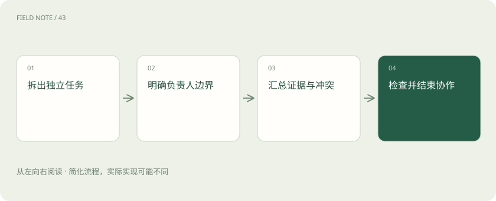

先读哪些知识
先用一个类比理解
像编辑部，采访、核实与审稿可分工，但同一稿件要明确谁能改。
类比只帮助建立直觉，不等同于技术的完整机制。
一图看懂

概念边界
多个智能体可以分别搜集证据、提出方案或复核结论，适用于能够独立推进的子任务。它们仍可能共享同一模型的偏差，多次一致不等于独立证据，也不应简单用投票替代事实核验。
内部怎样运作
协作需要明确负责人、输入输出、共享状态和终止规则。并行修改同一材料可能互相覆盖，消息过多也会挤占上下文。对有严格顺序依赖的任务，增加参与者可能反而延长完成时间。
把机制放进具体场景
调查设备故障时，可让不同智能体分别查维护记录和厂家手册，再由负责人对照时间线。若两者都引用同一篇转载，不能算两份独立证据；若同时修改最终结论，应指定合并规则以防互相覆盖。
取舍与容易忽略的限制
协作需要控制共享信息的范围。完整转发全部历史会扩大上下文成本，也可能把某个未经证实的假设传播给所有参与者。让每个角色提供来源、确定程度和未解决问题，更利于负责人识别真正分歧。独立任务适合并行，强依赖任务则应等待前一步产生可用输入后再启动。
放进真实场景
SCENARIO
一名智能体审核账单、另一名检查合同费率，可以并行读取材料；最终核算必须等费率口径确定，否则两个看似独立的金额结论无法直接拼接。
别踩这个误区
先衡量分工带来的质量收益，再扣除协调延迟、调用费用和故障面。
想一想
三个智能体给出相同答案，是否就是三份独立证据？
不是，它们可能共享训练偏差、同一来源或前一个智能体的结论。
关联阅读
资料与边界
本文为原创知识讲解。类比和图示经过简化；示例数字不代表实测或报价。整理日期：2026-11-04。文末列出对应技术的原始资料，具体功能与版本支持请以原文为准。